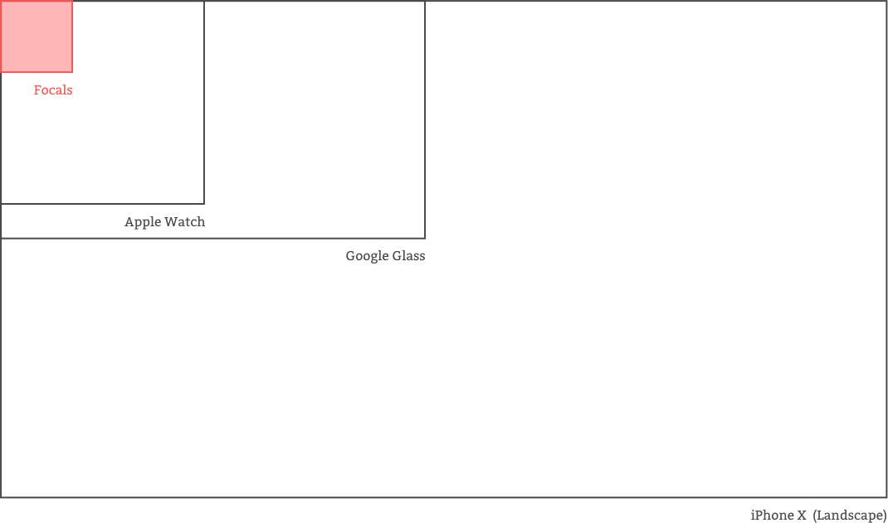
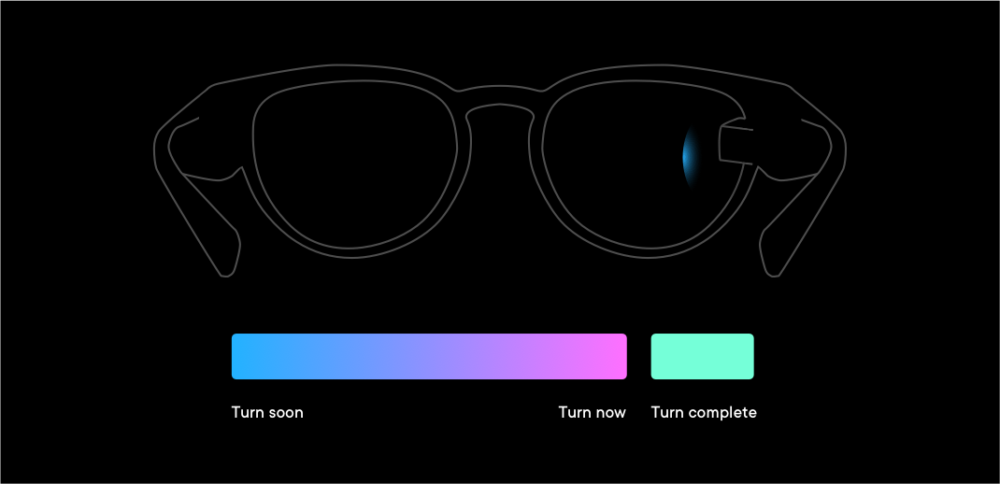
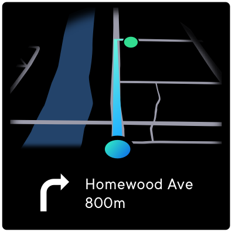
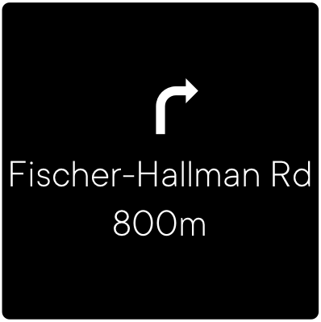
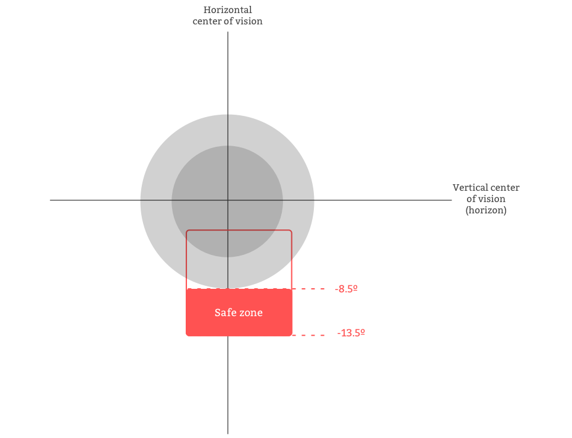
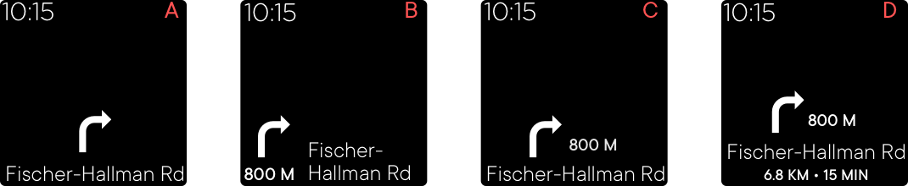
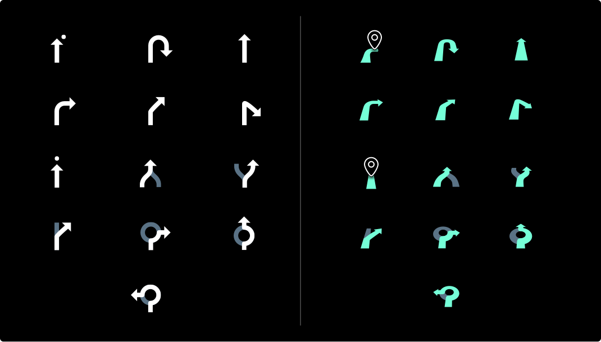

Smart glasses offer the perfect form-factor to passively deliver navigational cues while allowing the user to maintain focus on the real world. As the design lead for the "Go" navigation project on Focals, my goal was to design an experience that provided the user with the information they needed to navigate through unfamiliar environments while keeping their eyes in front of them instead of down at their phones.
Through learnings from ethnographic research, we established a set of design tenets:
• Fast - the user must be able to understand the information quickly (under 2 sec)
• Visual - for faster parsing, the information should not rely heavily on text
• Intentional - the experience should align with the strengths of the Focals display
• Discreet - the experience should allow the user to navigate like a local, not a tourist
Aside from aligning with the tenets, our high-level goal was to design a reliable navigation experience that allowed the user to get where they needed to go without having to use their phone as a backup.
The display on Focals is tiny (110px x 110px) and notably different compared to more ubiquitous displays. For instance, the background is transparent; the information shown has to maintain a high contrast with different backgrounds, from a dark night sky to a white snowy road. Additionally, how much information is displayed on the screen needs to take user context into consideration; too much information while navigating and you'll occlude the user's field of view, essentially blinding them. To stress test these considerations, we quickly designed a few prototypes and tested them with beta users.

We started as simple as possible with an idea of a purely visual system. As the user approached a turn, a coloured gradient appeared on the screen to nudge the user in the right direction. The closer the user got to making the turn, the warmer the gradient turned. Once the turn was completed, the gradient would turn green to indicate the right maneuver was made.

During testing, we saw that users were unsure of what the shapes or colours were communicating - users wanted a more explicit, unambiguous indication of how soon a turn had to be made. This simple concept also failed to support more complicated turn maneuvers such as roundabouts or forks.
Next, we tried a compass-based approach. In this model, there were no maps or turn-by turn instructions. The UI consisted of a simple arrow pointed to the destination; the path taken was totally up to the user. We appreciated the simplicity of the information provided and the seemingly more humane interaction of focusing on the journey instead of just getting to a destination.
Even though the idea of compass navigation resonated in our initial research, the actual implementation on Focals didn't test well with our beta users. Although our intention was to design an experience that focused on the journey, this was not what our users wanted. The compass model provided too much uncertainty, often led users down dead-end streets or through undesirable locations, and never guaranteed the fastest path. In practice, our users ended up caring a lot about getting to the destination as fast as possible and without a hitch.
Moving along the spectrum, we decided to test a more traditional guided turn-by-turn based system with a map for reinforced wayfinding. To limit implementation effort, we hard-coded in a series of locations and ran moderated user tests.

The tests showed that maps with detailed wayfinding cues didn’t display well on Focals. Even when stripping away essential wayfinding information like street names and building footprints, maps look blurry and overly zoomed in. Maps also obstructed the user’s central field of vision when walking, making it feel like it wasn’t a visually intentional experience.

After some more iterating, we learned that a multi-modal approach, pairing visual with audio output from the system was the strongest option. As the user approached a turn, an audio cue notified them that the display would turn on. The display would then show a visual representation of the turn maneuver icon, the turn maneuver text, and the distance to the maneuver. Since the user might not be able to pay attention to the display at a given time, we added audio to reinforce the turn maneuver. In the end, this model resulted in a "Goldilocks" level of information that provided users with exactly what they had needed.
Once we understood what the best direction for the experience was, we needed to finalize the optimal layout and display position.
First, we sought help from our HCI team and secondary research to better understand where users saw the display based on the specific size of their custom-made Focals. We knew that if we wanted to promote a heads-up experience, we needed to stick to only displaying information in the lower half of the display.

Once we understood display position, we evaluated different layouts and information levels in order to see which was the fastest to scan and understand.

After evaluating each layout in context, we found that layout B was the most effective but users complained that the icons felt awkward overlaid on top of the world in front of them since they didn't didn't have a perspective.

When comparing icons, we learned that the 3D icons tested overwhelmingly better than the 2D icons. According to users, the 3D icons felt more "natural" and "integrated" with the world in front of them compared to the 2D icons.
Additionally, we ended up evaluating different icon colours to find the best contrast to use in different ambient light, weather, and environmental conditions. In the end, we designed a simple, lightweight, heads-up navigation experience that aligns with most of the tenets we defined at the beginning of the project.
Getting the details right on such a simple experience took many iterations and lots of testing. Early on in the project, we opted to build prototypes on a computer and evaluate them in a lab. Although the feedback from these sessions was useful, it was often incongruous with feedback we would receive after building out the final experience on glasses. The takeaway: while testing in a lab may be suitable for some things, there is often no substitute to building prototypes and testing on-device, in-context when it comes to smartglasses.
SUMMARY
I designed the heads-up navigation experience for the world's first everyday consumer smartglasses.
MY ROLES